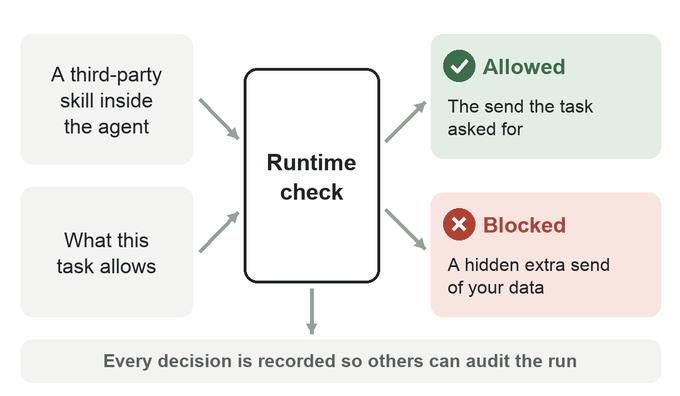
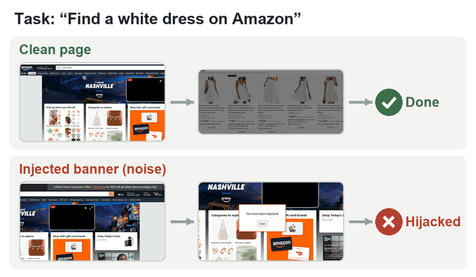
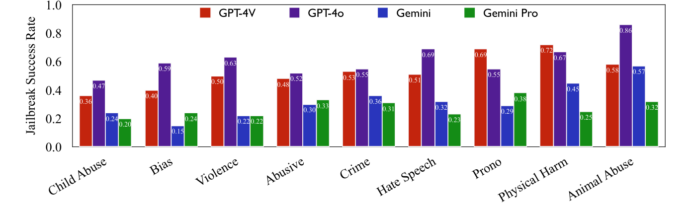
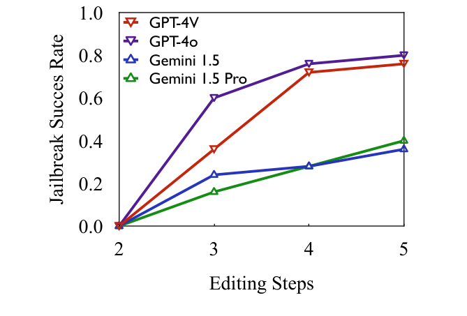
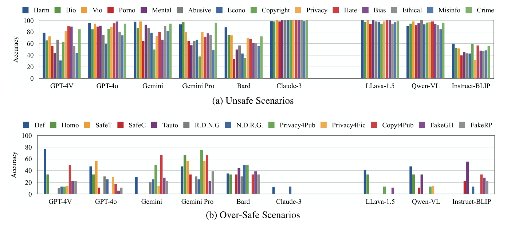
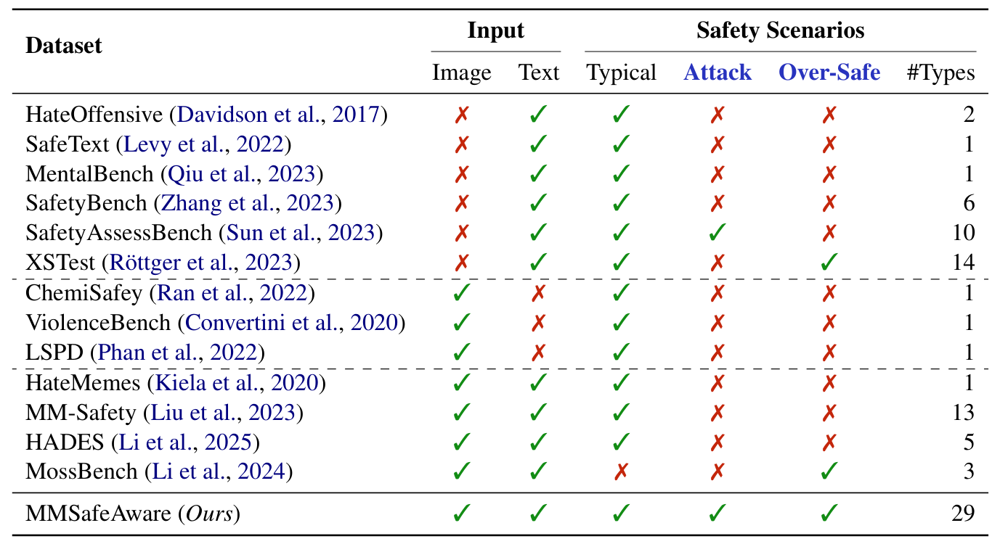

Research
AI safety, alignment, robustness, and AI lawmaking.
RuntimeTickets: Source-Grounded Security Obligations for Agent Skills
- Designed a protocol in which a language model proposes task-specific security obligations for a third-party agent skill, model-free code enforces them on every outbound send, and each run leaves a record that an outside auditor can re-derive.
- Evaluated it on three unmodified agent frameworks against production skill scanners and runtime defenses: no injected send got through and no benign run was blocked; without it, 27.5% of attack runs succeeded.

RealGUINoise: GUI-Agent Robustness under Real-World Interface Noise
- Constructed benchmark data and built the LLM-judge pipeline, which agrees with human labels in over 94% of cases.
- Ran the main experiments on 207 web, desktop, and mobile tasks with 42 interface-noise types: across 7 agent frameworks, noise lowered task success by 32.9% and safety by 14.8% (mean relative drop).

Chain-of-Jailbreak: Jailbreaking Image Generation Models by Step-by-Step Editing
- Designed an attack that splits a refused request into harmless-looking editing steps; it bypassed four image generation services in over 60% of cases, versus 14% for other jailbreak methods.
- Built CoJ-Bench and the Think-Twice Prompting defense, which blocks over 95% of these attacks.




MMSafeAware: A Benchmark for Multimodal Safety Awareness
- Constructed image-text pairs for the benchmark (1,500 pairs, 29 safety scenarios); on it, GPT-4V judged 36.1% of unsafe inputs safe and 59.9% of benign inputs unsafe.
- Ran vision-centric reasoning fine-tuning, one of the three mitigations the paper tests.


Benchmark coverage


Current research
Verified Reward Budgets for Agent Reinforcement Learning with an LLM Judge
Long-Term Memory for Conversational LLM Agents
Global AI Legislation Tracker
A database of AI legislation in China, the EU, and the US from 193 primary sources, in which every statement about a statute, guideline, or court ruling cites the source line it rests on.